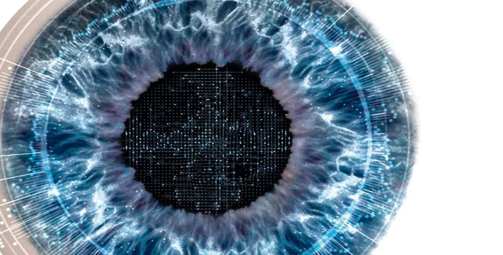
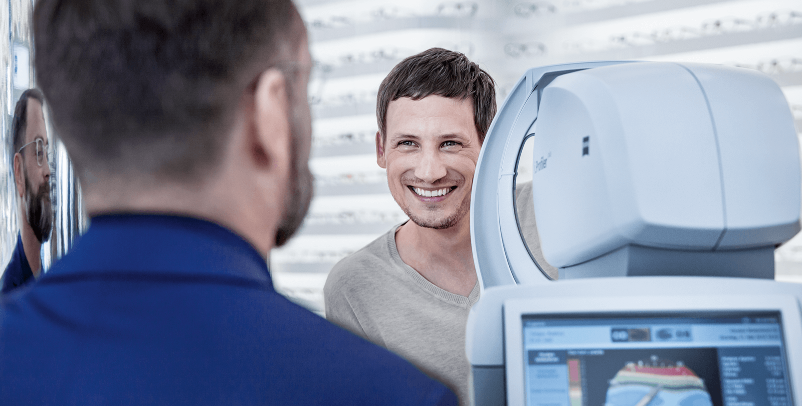
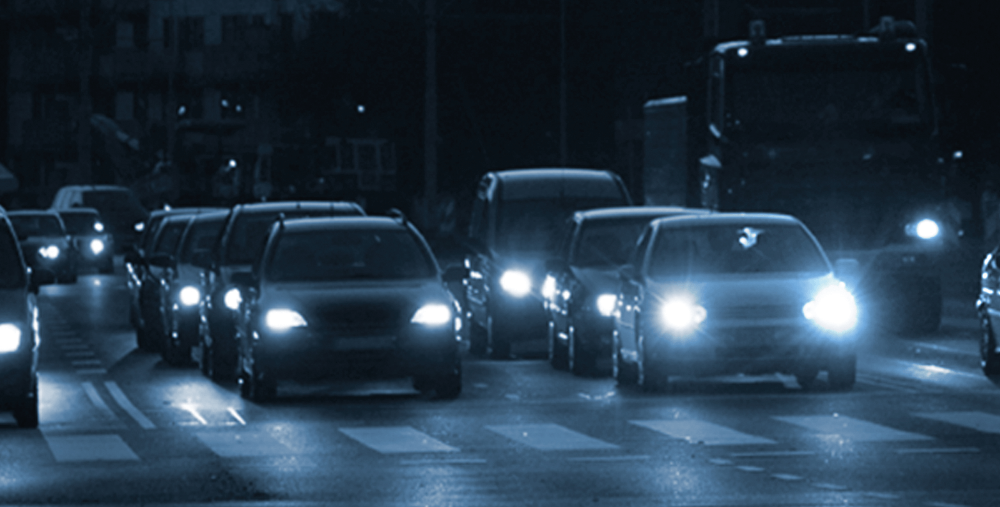
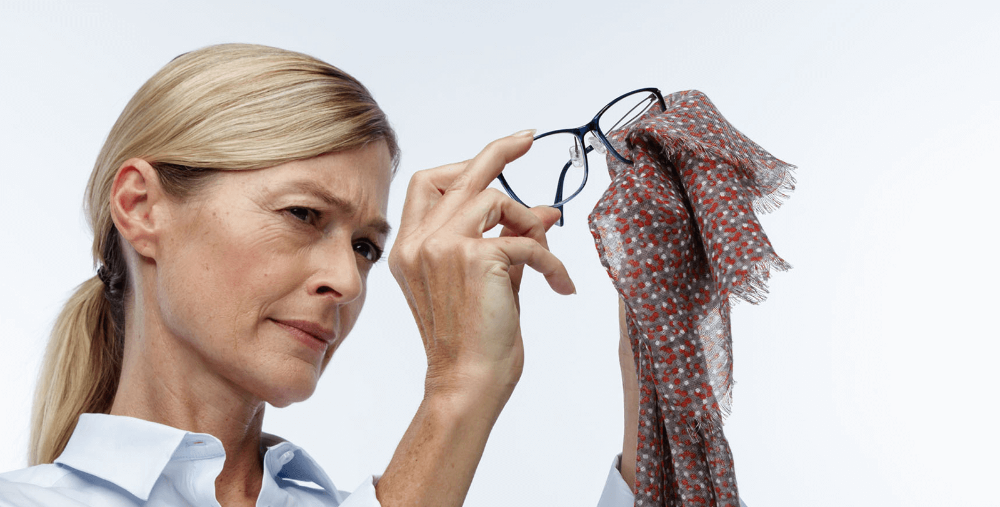

ZEISS i.Scription lenses.
Enjoy more brilliant, clearer
vision with enhanced contrast
and more vibrant colours – even
at night and at twilight.
Spectacle lenses with ZEISS i.Scription® Technology are customised down to the tiniest detail to accommodate your eyes and provide clearer, more brilliant vision with enhanced contrast. Experience crisper, improved vision – especially at night and at twilight.

Lenses with i.Scription® Technology.
Crisper and more brilliant vision with greater contrast – even at night.
Experience impressive visual quality. For lenses featuring ZEISS i.Scription Technology, the wearer's personal eye profile is objectively analysed using a special computer-guided measuring system: the ZEISS i.Profilerplus. This profile can be incorporated in the design and production of the lens, making it possible to correct previously undetected visual defects. The result: crisper, clearer vision at night and at twilight, reduced glare effects (e.g. from the headlights of oncoming cars), more vibrant colours and improved contrast perception.
Optician Search
Find a Zeiss Optician near you

Clearer night vision.
Many spectacle wearers experience poor vision at night or at twilight because reduced lighting conditions cause their pupils to dilate. As a result, depth of field is lost and spatial vision is limited, while reflections and poor contrast tire the eye. i.Scription Technology takes into consideration the wearer's dilated pupils at night within the lens design, helping to improve visual performance in low light conditions.
With i.Scription technology
Without i.ScriptionWith i.Scription


Analyses your eyes in just a few second. As detailed as a fingerprint.
To manufacture lenses with ZEISS i.Scription Technology, your eyes are analysed not just with the standard test – the subjective refraction performed by your eye care professional –, but also objectively with a special computer-controlled measuring system: the ZEISS i.Profilerplus. Unlike standard procedures, this lens also measures your vision with a dilated pupil and, with the help of wavefront technology, generates your individual vision profile in just a few seconds. The end result: your vision profile is as unique as your fingerprint, ensuring that typical visual defects (e.g. short- and long-sightedness) are identified accurately as well as any higher-order aberrations – defects which significantly influence your vision quality at night and at twilight.

More visual comfort, greater safety.
Optimised and fitted with pinpoint accuracy.
i.Scription lenses can be optimised and further individualised for your eyes during production. This technology enables the manufacture of precision lenses with the best-possible corrective properties. These help enhance visual comfort, not only for wearers with low-grade night blindness, and provide a greater sense of security in poor light. See for yourself.

The ideal everyday pair of glasses: self-tinting lenses with i.Scription.
Razor-sharp vision and sun protection – all in one lens.
A pair of glasses for every situation: these self-tinting lenses also work as sunglasses. They darken in seconds and clear up in just a few minutes. And of course they feature 100% UV protection.
Scratches and dirt don't stand a chance. More robust than ever.
High-performance lens coatings make your glasses extremely durable against scratches or adhesive dirt. The benefit: your lenses remain dirt-free for longer, making them significantly easier to clean. See better, look better – thanks in part to the latest anti-reflective coating.
5 Tips to help prevent Digital Eyestrain.

1. Poor vision is one of the greatest safety risks when driving. As a driver, you should have your eyes checked regularly at your optician – at least every two years.

2. When you go to your optician, make sure you discuss your personal vision needs. Don't forget to tell your optician if you drive a lot or if you experience special vision problems when driving at night or at twilight. They'll be able to help.
3. Wear your new glasses regularly – starting as soon as you get them. This way you can adjust to them as quickly as possible. If you have not fully adjusted to your new glasses after 14 days, then a short visit to your optician is in order. They'll be happy to assist.
4. If you feel the alignment of your glasses is almost, but not quite, 100%, you should have them straightened right away by your optician and checked so that you enjoy everything your glasses have to offer.

5. It might be convenient, but don't clean your glasses with your sleeve, T-shirt or a tissue. The reason: there are microscopic dust particles which can scratch the lens over time. We suggest that you clean your glasses with a cleaning solution from ZEISS.